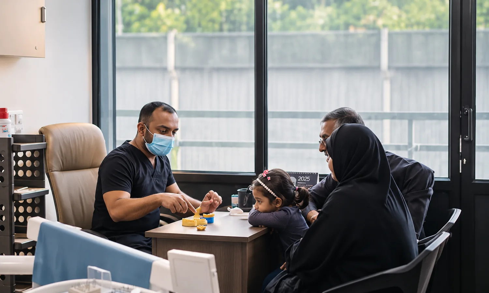

Biomimetic Dentistry
Restorative care guided by the structure and function of natural teeth.
Learn about biomimetic care →Thoughtful dentistry, advanced treatments and personalised care — designed around your smile.

DentisTree brings precision, restorative expertise and a personal approach together — with thoughtful attention to preserving natural tooth structure.
From biomimetic dentistry to comprehensive restorative care, we take time to understand your needs and discuss treatment options clearly.
Discover DentisTree →Explore our restorative, aesthetic and rehabilitative services. Your dentist can help you understand which options may suit your needs.
Restorative care guided by the structure and function of natural teeth.
Learn about biomimetic care →A restorative option for replacing missing teeth, planned around your needs.
Explore treatment →Thoughtful aesthetic planning with attention to your individual smile.
Explore treatment →Thin restorations that may be considered to refine a smile's appearance.
Explore treatment →Custom restorative options for damaged teeth or spaces in a dental arch.
Explore treatment →Endodontic treatment and retreatment for teeth that need further care.
Explore treatment →Care to restore tooth form and function, based on clinical assessment.
Explore treatment →Complete and cast partial dentures tailored to a patient's circumstances.
Explore treatment →A team committed to precision, continuing learning and conversations that help patients make informed choices.
Biomimetic dentistry considers how teeth are built and work. Our focus is to preserve natural tooth structure where appropriate and restore with careful attention to function and appearance.
Explore biomimetic dentistry →We take time to listen, explain what we see and talk through appropriate choices. So your care can begin with clarity and a plan shaped around you.
Start with a conversation about what matters to you.